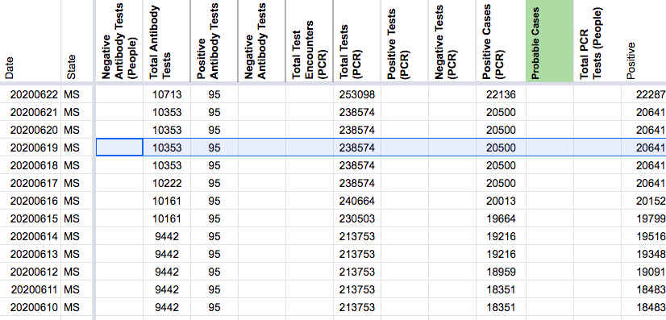
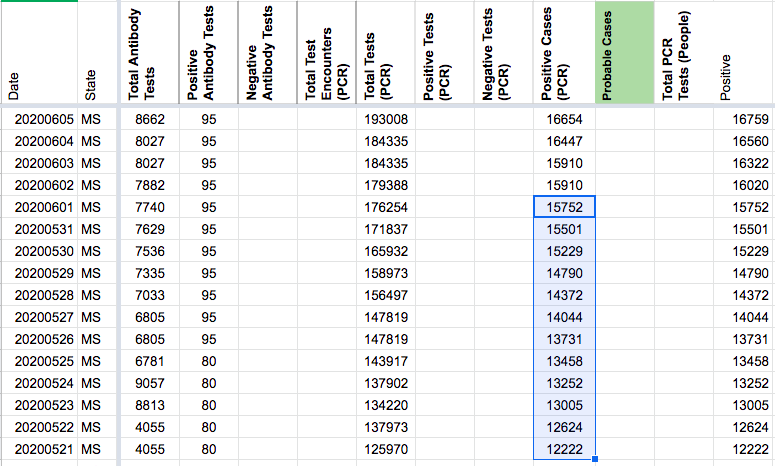
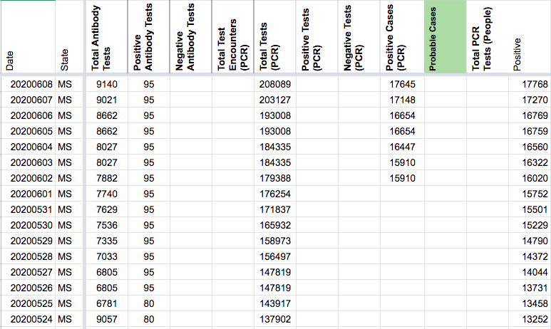
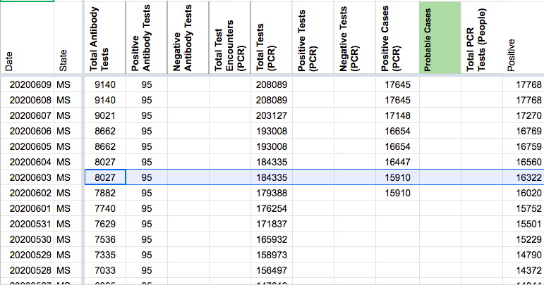
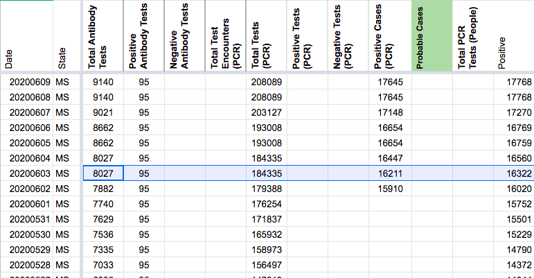
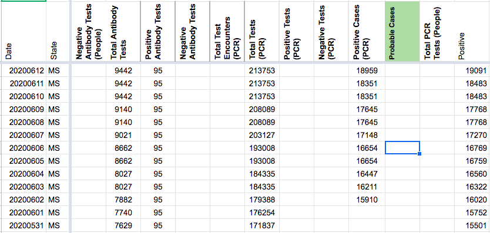
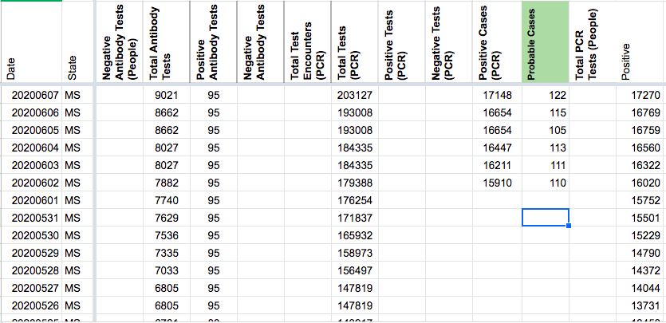
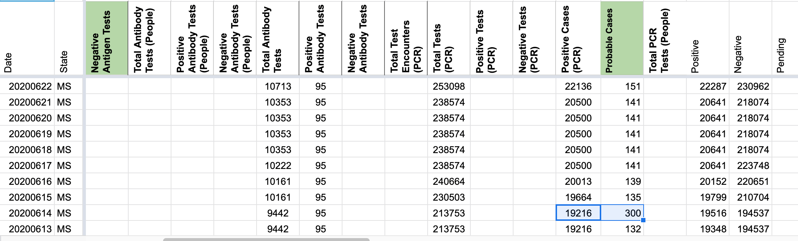
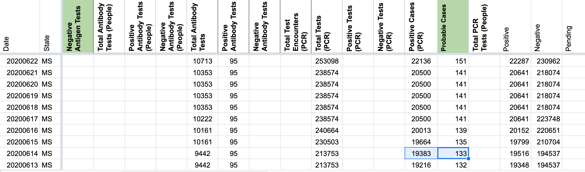
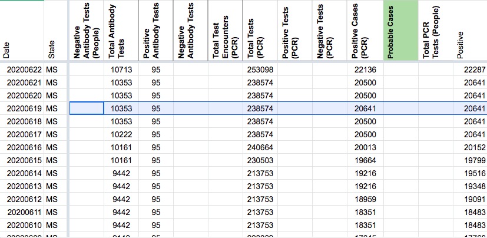

[MS] Probables Backfill and Confirmed Cases Corrections
Issue number 846
jesseandersonumd opened this issue on September 18, 2020 at 7:06 am
Labels Data quality Historical Data stale Backfill
State or US: MS
Describe the problem As explained by this previous github issue [https://github.com/COVID19Tracking/issues/issues/712] we reported positive (PCR) cases from 4/30-6/01, though it wasn’t clear whether the reported cases value represented confirmed cases exclusively. We will delete values in the positive PCR confirmed column prior to 6/1, after which both CTP and MS started separating confirmed and probable cases on their main state page according to screenshots. [https://covidtracking.com/screenshots/MS/MS-20200602-123808.png] We will also backfill probables using the formula positives - positive PCR confirmed from 6/02 - 7/28 (which is when CTP first started reporting probables) and cross-referencing with screenshots.
{kind=link}
We will also correct the value on 6/19 for positive cases PCR, which was 20641 when it should’ve been 20500 because we needed to carry over this value from 6/17 - MS stopped separating confirmed and probables between 6/17-6/21. We will also correct the value on 6/3 for positive cases PCR, which was 16211 according to screenshots [https://covidtracking.com/screenshots/MS/MS-20200603-124214.png] but reported as 15910. We will also correct the value on 6/14 for positive cases PCR, which was reported as 19216 when it should’ve been 19383 [https://covidtracking.com/screenshots/MS/MS-20200614-124313.png].
{kind=link}
{kind=link}
Link to data source
CORRECTING VALUE ON 6/19 - AFTER: 
CORRECTING CONFIRMED VALUES 4/30-6/1 - BEFORE:

CORRECTING CONFIRMED VALUES 4/30-6/1 - AFTER: 
MISTAKE CORRECTION 6/3 POSITIVE CASES PCR - BEFORE:

MISTAKE CORRECTION 6/3 POSITIVE CASES PCR - AFTER:

PROBABES (BEFORE): 
PROBABLES (AFTER): 
MISTAKE CORRECTION 6/14 POSITIVE CASES PCR AND PROBABLES- BEFORE:
MISTAKE CORRECTION 6/14 POSITIVE CASES PCR AND PROBABLES- AFTER: 
Before and after values
This issue has been automatically marked as stale because it has not had recent activity. It will be closed if no further activity occurs. Thank you for your contributions!
This issue has been closed because it was stale for 15 days, and there was no further activity on it for 10 days. You can feel free to re-open it if the issue is important, and label it as “not stale.”
CORRECTING VALUE ON 6/19 - BEFORE:
